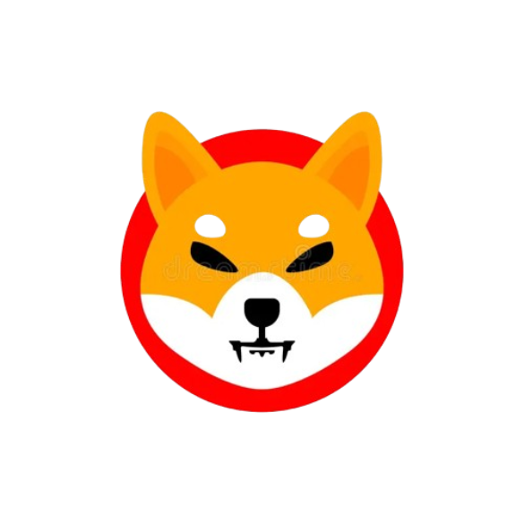

| Dogecoin is a cryptocurrency that was created in December 2013 by Billy Markus and Jackson Palmer to be like a humorous take on Bitcoin, with its logo bearing the image of the Shiba Inu dog from the "Doge" meme. A joke began and became a widely recognized and used digital currency, known for strong community support and frequent involvement in online tipping and charitable cause. |

Dogecoin |
| SHIBA is a decentralized cryptocurrency launched in August 2020. It came as a light-hearted competitor or, in fact, "Dogecoin Killer," to the world. The Ethereum-based token gained international fame for its meme-inspired branding based on the Shiba Inu dog. It's backed by a passionate community called the "Shiba Army," which enjoys features like ShibaSwap, a decentralized exchange, and supports charitable initiatives. Despite starting as relatively light-hearted, SHIB has become one of the great movers and shakers in the crypto arena with its speculative intraday activity. |

SHIBA |
| Bitcoin (BTC) is the first cryptocurrency in the world created by a pseudonymous Satoshi Nakamoto in 2009. It runs on a blockchain that facilitates secure, peer-to-peer transactions without interference from intermediaries. Known as "digital gold," Bitcoin's capped supply of 21 million coins makes it a top-rated store of value and hedge against inflation. |
Bitcoin |